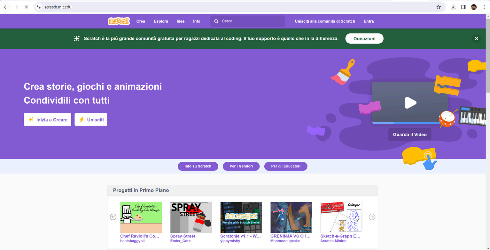
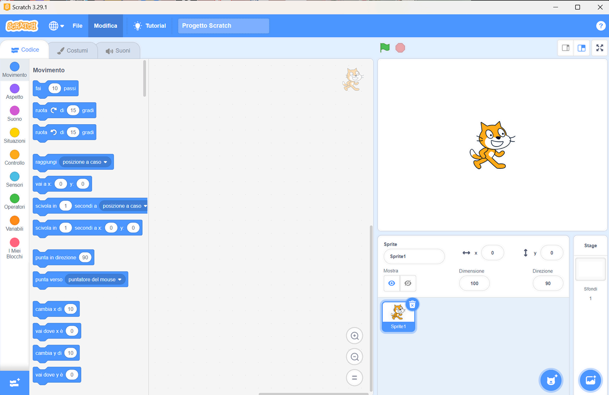
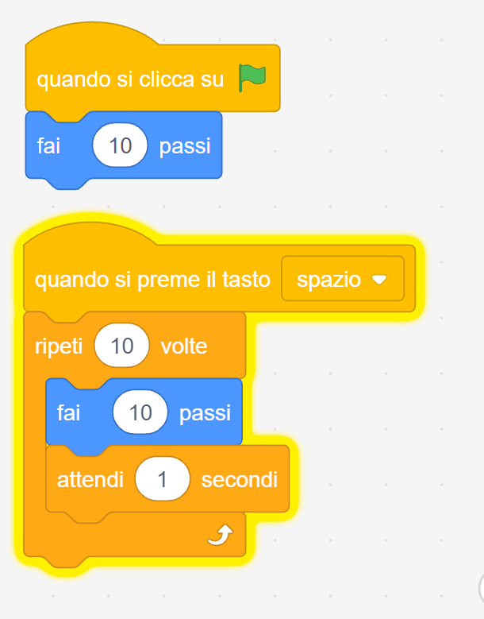
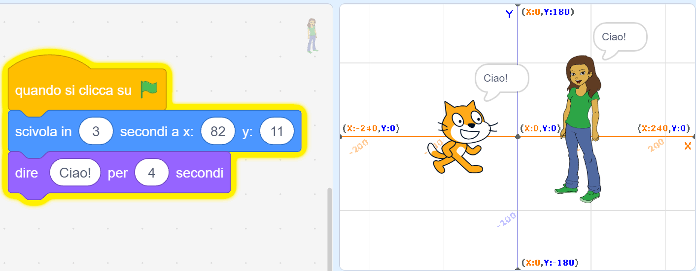
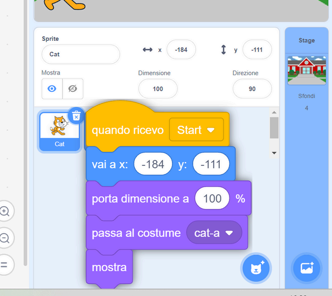
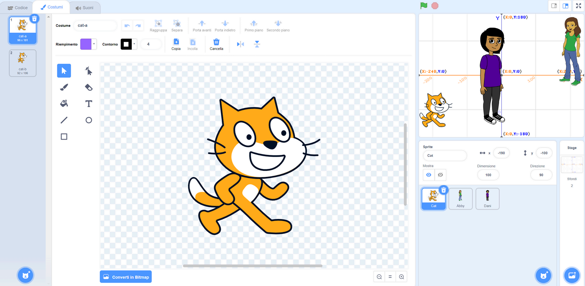
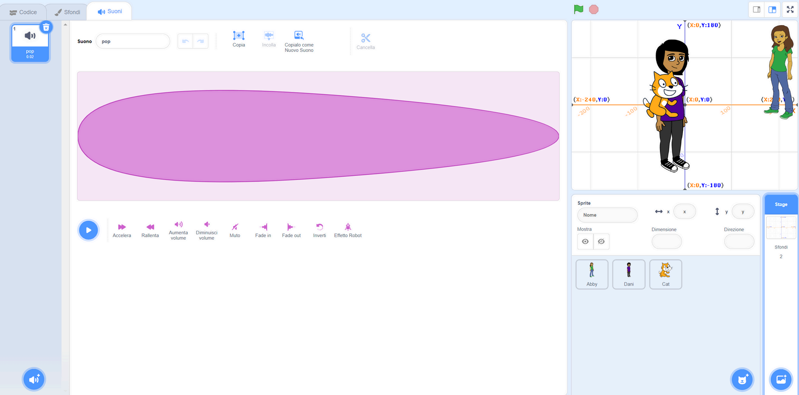
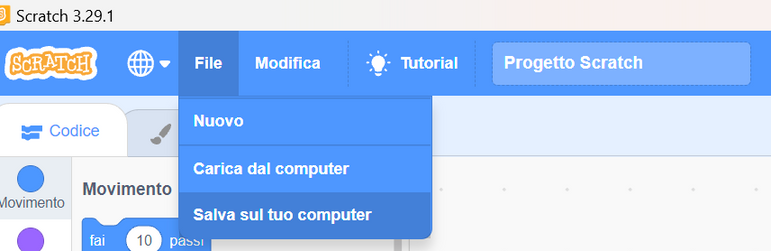

Programmare
con Scratch
Ambiente Scratch, blocchi, sprite, stage, messaggi e prime animazioni coordinate.
Cosa vedremo
Online o offline, la mappa dell'interfaccia e come si leggono i blocchi.
Movimento, eventi, sprite e stage, ripetizioni, decisioni e messaggi tra oggetti.
Da Abby e il Gatto ai costumi, ai suoni, agli errori tipici e al salvataggio.
Scratch in breve
Scratch è un ambiente gratuito di programmazione grafica sviluppato dal MIT Media Lab e disponibile su scratch.mit.edu. Permette di creare animazioni, giochi, simulazioni e storie interattive senza installare niente: basta un browser. È usato in scuole di tutto il mondo come primo passo verso la programmazione, perché elimina gli errori di sintassi: i blocchi si incastrano solo dove ha senso, così ci si concentra sulla logica e non sulla punteggiatura.

Online oppure offline
Scratch funziona sia nel browser sia come applicazione installata. La modalità online richiede connessione internet; quella offline elimina la dipendenza dalla rete e riduce i problemi tipici dei laboratori scolastici.
Online
Dal sito scratch.mit.edu si entra in "Crea" e si lavora direttamente nel browser senza installare nulla. Comodo se i computer del laboratorio non permettono installazioni.
Offline
L'app Scratch Desktop si scarica una volta e funziona senza rete. Riduce problemi di connessione, blocchi del browser e dipendenza dalla velocità del Wi-Fi scolastico.
Lingua
Dal mappamondo in alto a sinistra si cambia la lingua dell'interfaccia in qualsiasi momento, anche a metà lezione, senza perdere il progetto aperto.
File locali
I progetti si salvano come file .sb3 sul computer o su una chiavetta USB. Si ricaricano con "Carica dal computer" e si può lavorare su più macchine diverse.
La mappa dell'ambiente
Scratch divide lo schermo in zone distinte: blocchi a sinistra, area script al centro, stage in alto a destra, elenco sprite in basso.

Categorie colorate per movimento, aspetto, suono, eventi, controllo, sensori, operatori e variabili. Ogni categoria ha un colore diverso per riconoscerla subito.
Qui si trascinano e incastrano le pile di codice associate allo sprite selezionato. Ogni sprite ha la sua area: cambiare sprite cambia i blocchi visibili.
Mostra l'output del progetto in tempo reale: animazione, gioco, dialogo o simulazione. Ha una risoluzione fissa di 480x360 pixel.
Ogni oggetto ha codice, costumi, suoni, coordinate, direzione, dimensione e visibilità. Cliccando su uno sprite nel pannello si vede solo il suo codice.
Lo stage può cambiare sfondo da libreria, disegno o immagine importata. Gli sfondi possono anche avere script propri per gestire la scena.
Si aggiungono blocchi speciali: Music, Text to Speech, Translate, Video Sensing, LEGO e Micro:bit. Utili per progetti più avanzati o con hardware esterno.
Leggere i blocchi
Le forme dei blocchi non sono casuali: indicano dove possono stare nella pila, cosa possono contenere e quali input richiedono. Riconoscere la forma aiuta a capire l'errore prima ancora di eseguire il codice.
Blocchi pila
Si agganciano sopra e sotto: compongono sequenze di istruzioni. Sono la maggioranza dei blocchi — "fai 10 passi", "attendi 1 secondo", "dire Ciao" sono tutti blocchi pila.
Input ovali
Accettano numeri, testo o variabili come valore: per esempio 10 passi o 2 secondi. Si possono sostituire con una variabile o con un blocco operatore dello stesso tipo.
Condizioni
Le forme esagonali restituiscono vero o falso e si usano nei blocchi "se" e "ripeti fino a". Esempi: "tocca il colore", "risposta = sì", "x > 100".
Blocchi contenitore
Cicli e condizioni hanno uno spazio interno dove si inseriscono altri blocchi. L'indentazione visiva mostra cosa è dentro e cosa è fuori dal ciclo.
Primo movimento
Questo primo script contiene già i tre ingredienti di ogni programma Scratch: un evento che lo avvia, istruzioni in sequenza e una ripetizione. Conviene leggerlo riga per riga prima di eseguirlo.
Il contorno evidenziato indica quale pila è in esecuzione. Prova a togliere l'attesa e riavviare: vedere la differenza insegna più di dieci spiegazioni.

Eventi di avvio
Un algoritmo non parte da solo: deve essere attivato da qualcosa. Scratch rende visibile il concetto di evento usando blocchi a forma di cappello — si riconoscono perché non si agganciano sopra ad altri blocchi.
Bandierina verde
Punto di partenza comune: cliccare la bandierina verde avvia tutti gli script con quel blocco in testa. È il modo più usato per inizializzare variabili e lanciare l'animazione in modo prevedibile.
Tasto premuto
Un tasto specifico — frecce, spazio, lettere — può attivare un comportamento separato, per esempio muovere un personaggio o saltare. Permette controllo interattivo in tempo reale.
Messaggio ricevuto
Un segnale interno (broadcasting) coordina più sprite senza farli dipendere da attese manuali. Lo sprite A invia il messaggio "Start"; lo sprite B lo ascolta e reagisce quando arriva.
Clic sullo sprite
Cliccando direttamente uno sprite si attiva il suo script. Utile nei giochi per trasformare oggetti in pulsanti interattivi o per avviare dialoghi toccando un personaggio.
Stage e sfondi
Lo stage non è solo uno sfondo decorativo: ha la sua scheda Costumi (chiamata Sfondi), può avere script propri e serve da contenitore per la logica condivisa tra tutti gli sprite del progetto.
Scegliere sfondo
Si può usare la libreria di sfondi integrata, importare un'immagine dal computer, disegnare uno sfondo personalizzato nell'editor grafico o scegliere uno sfondo a caso dalla libreria.
Cambiare scena
Il blocco "passa allo sfondo" cambia il contesto visivo durante l'esecuzione. Permette di creare capitoli di una storia, livelli di un gioco o fasi diverse di un'animazione.
Codice comune
Lo stage è adatto a gestire messaggi generali come "Start" o "Fine" che devono raggiungere tutti gli sprite insieme. Centralizzare qui la logica principale rende il progetto più ordinato.
Audio globale
Una colonna sonora di sottofondo si carica sullo stage, non su un singolo sprite, perché deve suonare per tutta la durata della scena indipendentemente da chi è visibile.
Sprite e stato
Ogni sprite è un oggetto indipendente con il suo stato. Quando si riavvia il progetto con la bandierina verde, gli sprite non tornano automaticamente alla posizione originale: bisogna reimpostare ogni proprietà nello script di inizializzazione.
Coordinate
x e y decidono la posizione sullo stage. Il centro è x:0 y:0; la x cresce verso destra, la y cresce verso l'alto. Inizializzare sempre le coordinate evita sprite fuori scena al secondo avvio.
Direzione
Definisce il verso del movimento e la rotazione. 90° = destra, 180° = giù, 270° = sinistra, 0° = su. Impostare la direzione all'avvio impedisce movimenti inattesi da run precedenti.
Dimensione
La percentuale modifica la grandezza dello sprite sullo stage. 100% è la dimensione originale; valori inferiori simulano lontananza, valori superiori avvicinamento o un'animazione di crescita.
Visibilità
Uno sprite nascosto rimane nascosto anche al riavvio se non si aggiunge "mostrami" nello script di inizializzazione. I bug di visibilità sono tra i più comuni: inizializzare sempre esplicitamente.
Progetto guidato: Abby e il Gatto
Il primo progetto mette in scena due sprite: dalla libreria (il pulsante con il gatto, in basso a destra) si aggiunge Abby accanto al Gatto, già completa di costumi e suoni. Poi si costruisce la scena un blocco alla volta, nell'ordine giusto.

Dialogo minimo
Per far parlare due sprite non basta mettere i blocchi vicini: ogni sprite esegue la propria pila per conto suo, in parallelo. Il trucco è far combaciare i tempi — il Gatto parla per 2 secondi, quindi Abby attende esattamente 2 secondi prima di rispondere.
Il blocco dire senza durata sparisce troppo presto: usare sempre la versione per X secondi. Attenzione però: le attese manuali funzionano finché il dialogo è corto. Se aggiungi una battuta a metà, devi ricalcolare tutte le attese successive. Tra poco vedremo un modo più robusto.
Ordine e incastri
Scratch esegue i blocchi nell'ordine in cui sono impilati, dall'alto verso il basso, uno alla volta. Capire questo è fondamentale: cambiare l'ordine dei blocchi cambia il comportamento del programma, anche se i blocchi sono gli stessi.
Alto verso basso
Scratch esegue la pila partendo dal blocco in cima e scendendo. Il primo blocco finisce prima che inizi il secondo. Se vuoi che due cose avvengano insieme, servono script separati sullo stesso sprite.
Blocchi separati
Due pile di blocchi non incastrate tra loro sono due sequenze indipendenti. Se trascini un blocco lontano dalla pila, smette di fare parte di quella sequenza anche se visivamente sembra vicino.
Attese
"Attendi N secondi" mette in pausa la pila per quella durata. Sincronizza dialoghi tra sprite diversi: se il Gatto parla per 2 secondi, l'altro sprite deve aspettare 2 secondi prima di rispondere.
Cancellazione
Eliminare un blocco dalla pila rimuove anche tutti i blocchi agganciati sotto. Per eliminare un solo blocco è meglio trascinarlo via dalla pila prima di cancellarlo, per non perdere il lavoro successivo.
Ripetere e decidere
Le sequenze da sole non bastano: quasi ogni programma deve ripetere azioni e prendere decisioni. In Scratch questi poteri stanno nella categoria Controllo — i blocchi contenitore riconosciuti prima dalla forma, con lo spazio interno per altri blocchi.
Ripeti N volte
Esegue i blocchi interni un numero fisso di volte, poi prosegue con il blocco successivo. Perfetto quando le ripetizioni si conoscono in anticipo: 10 passi di camminata, 4 lati di un quadrato, 3 domande di un quiz.
Per sempre
Ripete all'infinito, finché il progetto non viene fermato. Si usa per comportamenti continui, come alternare i costumi di un personaggio che cammina. Non ha aggancio sotto: nulla può venire "dopo" un ciclo che non finisce.
Se… allora
Esegue i blocchi interni solo se la condizione esagonale è vera. La variante "se… altrimenti" aggiunge un secondo ramo: due strade possibili, una sola percorsa. Sarà il cuore del quiz nel prossimo modulo.
Annidamento
I contenitori si inseriscono uno dentro l'altro: un "se" dentro un "per sempre" controlla continuamente una condizione, per esempio se lo sprite tocca il bordo. L'incastro visivo mostra sempre cosa appartiene a cosa.
Programmazione a oggetti
Scratch introduce senza dirlo esplicitamente il concetto di programmazione orientata agli oggetti: ogni sprite è un oggetto con le sue proprietà e i suoi comportamenti, separati da quelli degli altri sprite.
Indipendenza
Il codice del Gatto non appare nell'area script di Abby e viceversa. Ogni sprite ha il suo spazio script privato: non si interferisce per sbaglio. Questo rende i progetti grandi molto più gestibili.
Selezione
Lo sprite selezionato nel pannello inferiore è evidenziato con un bordo blu. Tutti i blocchi che trascini nell'area script vanno a lui. È un errore comune lavorare sullo sprite sbagliato senza accorgersene.
Stato privato
Costume, suoni, posizione, direzione, dimensione e visibilità appartengono al singolo sprite. Due sprite diversi possono avere lo stesso nome di costume ma disegni completamente differenti.
Interazione
Gli oggetti collaborano scambiandosi messaggi (broadcasting), non copiando il codice nello stesso punto. Uno sprite invia un messaggio; uno o più sprite in ascolto reagiscono indipendentemente.
Messaggi come regia
I messaggi (broadcasting) funzionano come segnali di scena: chi li invia non sa quanti sprite li riceveranno, e chi li ascolta non deve conoscere il mittente. Questo disaccoppiamento rende il progetto modulare e più facile da modificare: a differenza delle attese manuali del dialogo, se una scena si allunga non c'è nulla da ricalcolare — il messaggio successivo parte semplicemente più tardi.
Un messaggio si crea con "invia" e si ascolta con "quando ricevo". Puoi creare messaggi con nomi parlanti come "IniziaGioco", "LivelloSuccessivo" o "GameOver".
Avvio ordinato
Un buon progetto ripristina lo stato iniziale prima di far partire l'animazione. Questo script rimette a posto, una riga per volta, le proprietà dello sprite viste prima: posizione, dimensione, costume e visibilità.
Lo script risponde al messaggio Start invece che alla bandierina: così è lo stage a decidere quando tutti gli sprite si inizializzano. Questo evita gli errori frequenti del secondo avvio: personaggi sovrapposti, nascosti, troppo grandi o fuori scena.

Errori tipici
La maggior parte dei bug in Scratch viene da tre famiglie di problemi: stato non inizializzato, tempi sbagliati e blocchi nel posto sbagliato. Riconoscere la famiglia aiuta a trovare la correzione più velocemente.
Ho cancellato un blocco
Premere CTRL+Z subito per annullare. Se la pila era lunga e l'annulla non basta, ricostruire dal comportamento atteso, non dalla memoria di com'era prima.
Sprite sovrapposti
Al secondo avvio gli sprite possono sovrapporsi se non si reimposta la posizione. Aggiungere "vai a x: y:" nello script di inizializzazione per ogni sprite con una posizione definita.
Sprite invisibili
Uno sprite rimasto nascosto da un'esecuzione precedente non si vede. La soluzione è aggiungere "mostrami" nello script di inizializzazione, prima di qualsiasi altro blocco.
Dialogo fuori tempo
Le attese manuali vanno fuori sincronia quando la scena cresce. Sostituire "attendi N secondi" con messaggi rende la sequenza più robusta e più facile da modificare.
Codice sullo sprite sbagliato
Prima di aggiungere blocchi, controllare sempre quale sprite è selezionato (bordo blu nel pannello). Il codice finisce sullo sprite attivo, non su quello che si vede nello stage.
Pila scollegata
Un blocco che sembra vicino alla pila ma non è agganciato non viene eseguito. Verificare che ci sia il clic di incastro: un blocco separato non ha il connettore visibile alla base di quello sopra.
Costumi e grafica
La scheda Costumi permette di personalizzare l'aspetto di ogni sprite e di creare animazioni cambiando immagine nel tempo. Uno sprite può avere decine di costumi diversi: il blocco "passa al costume successivo" li scorre tutti.

La modalità vettoriale permette di modificare forme, colori e punti di controllo separatamente. È preferibile per loghi, personaggi con forme pulite e disegni che devono scalare bene a qualsiasi dimensione.
La modalità bitmap è più simile a dipingere pixel per pixel. È utile per sprite con texture, fotografie o effetti di colore, ma ingrandendosi perde nitidezza a differenza del vettoriale.
Cambiare costume dentro un ciclo "per sempre" crea l'impressione di movimento. Il personaggio che cammina ha due o tre costumi con le gambe in posizioni diverse: alternandoli a una certa velocità sembra muoversi davvero.
L'editor grafico offre selezione, riempimento, matita, gomma, forme geometriche e allineamento. Questi strumenti bastano per preparare asset didattici senza usare software esterni come Inkscape o Photoshop.
Suoni e immagini
Scratch permette di importare suoni e immagini esterni, ma la qualità del risultato dipende dal formato scelto e da come si prepara il materiale prima di caricarlo.
WAV e MP3 si caricano nella scheda Suoni, dove un piccolo editor permette di tagliare, regolare il volume, aggiungere eco o velocizzare. Meglio suoni corti: i file lunghi appesantiscono il progetto salvato.
Se il suono vale per tutta la scena, va caricato sullo stage. Attenzione al blocco giusto: "riproduci suono" prosegue subito con il blocco dopo, "riproduci suono e attendi la fine" blocca la pila fino al termine.
Per sprite importati conviene il PNG con sfondo trasparente: il personaggio si ritaglia sulla scena senza il rettangolo bianco attorno. Il formato JPG non supporta la trasparenza, quindi non è adatto agli sprite.
La gomma dell'editor di Scratch può cancellare uno sfondo a mano, ma il bordo resta irregolare. Meglio partire da un PNG già pulito, preparato con uno strumento dedicato prima dell'importazione.

Salvare senza perdere lavoro
Lavorando offline Scratch non salva da solo e non conserva le versioni precedenti: una chiusura improvvisa o un esperimento sbagliato possono cancellare ore di lavoro. Salvare spesso, con nomi progressivi, permette di tornare indietro quando serve.
Usa File > Salva sul tuo computer ogni volta che raggiungi un punto stabile, non solo a fine lezione. Il progetto diventa un file .sb3.
Usa File > Carica dal computer per riprendere il lavoro. Attenzione: sostituisce il progetto aperto senza chiedere conferma.
Nomi come dialogo_001, dialogo_002 ordinano i file da soli e dicono subito qual è la versione più recente.
Prima di un esperimento rischioso salva una copia nuova: se l'idea non funziona, la versione precedente resta intatta.
Una riga di appunti per versione ("002: aggiunto dialogo di Abby") aiuta a ritrovare quella giusta senza aprirle tutte.

Dal progetto al software
Prima di programmare conviene decidere cosa deve succedere: carta e penna riducono blocchi inutili e scene confuse. Le sei fasi sono le stesse del software professionale, in miniatura.
Che cosa deve fare il progetto? Chi lo userà? Quanto deve durare? Scriverlo in tre righe evita sorprese a metà lavoro.
Disegna scena, sprite, messaggi, dialoghi e risorse: uno schizzo di due minuti sostituisce mezz'ora di tentativi.
Costruisci una parte alla volta e provala subito: un errore trovato dopo tre blocchi si corregge in fretta, dopo trenta no.
Prova avvio, riavvio, tempi, visibilità e casi strani: clic ripetuti, risposte inattese, secondo avvio senza ricaricare.
Salva una versione pulita e stabile da consegnare o mostrare, separata dai file di lavoro.
Rendi leggibili nomi di sprite, variabili e messaggi: chi riapre il progetto tra un mese deve capirlo subito.
Dai blocchi al progetto
Il primo modulo mette le basi: ambiente, oggetti, eventi, messaggi, risorse e metodo di lavoro.